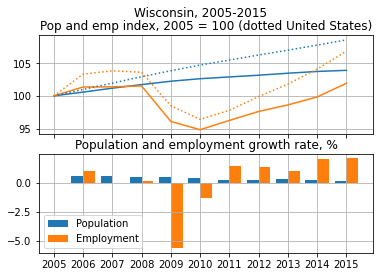
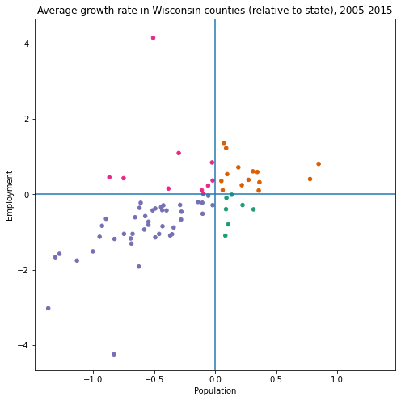

Analysis of population and employment dynamics
In this module we will combine economic, demographic and geographic data to explore patterns of population and employment dynamics across states and counties.
Main dataframes are stored in a global dict DF. During interactive notebook execution it is populated as needed. If imported as a module, function prep_data() should be called before using other module functions.
DF = {}
def prep_data():
DF['geo'] = data.geo()
DF['by year'] = data_by_year()
In data_by_year() we simply merge employment and population dataframes available from popemp.data module.
DF['by year'] = data_by_year()
DF['by year'].head()
| st | cty | year | pop | pop_gr | emp | emp_gr | |
|---|---|---|---|---|---|---|---|
| 0 | 00 | 000 | 1990 | 249470539 | NaN | 93983875.0 | 2.145 |
| 1 | 00 | 000 | 1991 | 252208537 | 1.097524 | 91781210.0 | -2.439 |
| 2 | 00 | 000 | 1992 | 255104027 | 1.148054 | 91752935.0 | 0.004 |
| 3 | 00 | 000 | 1993 | 257857622 | 1.079401 | 93252746.0 | 1.560 |
| 4 | 00 | 000 | 1994 | 260401091 | 0.986385 | 95712240.0 | 2.254 |
Dynamics in a given geographic area
Function plot_growth(st, cty, y0, y1) makes a plot with population and employment dynamic in a chosen geographic area. Level series are normalized to 100 in base year y0. Year-to-year growth rates are shown in a separate panel. For states and counties we also add lines for a bigger reference geography: states are compared to entire country, counties are compared to their state.
We can see that Wisconsin population was growing slower than national, and that post-recession employment recovery was also slower.
plot_growth('55', '000', 2005, 2015)

Widgets
Jupyter widgets are like other Python objects such as strings, lists or pandas dataframes. Like other objects widgets also store their state, have methods to do something useful with that state and have a representation suitable for rich rendering in a HTML view of a Jupyter notebook. Additional feature of widgets is that their visual representation can be updated dynamically and they can respond to user interaction.
Here is a simple slider. We can read it's value in code from another cell and also change it's value programmatically.
w = widgets.IntSlider(value=4, min=0, max=10, description='How many?')
w
IntSlider(value=4, description='How many?', max=10)
print('He says', w.value)
He says 4
w.value = 5
print('Now he says', w.value)
Now he says 5
We can combine multiple widgets and make them do something useful together. A button here will add up two numbers and display result in a separate label widget. We can even be fancy and use in text labels.
# create widgets
wx = widgets.IntSlider(2, 0, 5, description='$x$')
wy = widgets.IntSlider(2, 0, 5, description='$y$')
wb = widgets.Button(description='Add')
wz = widgets.Label('$x + y = ?$')
# useful function
def how_many(x, y):
z = x + y
return 5
def click_handler(*args):
# "*args" captures arguments passed from calling widget, but we ignore them here
x = wx.value
y = wy.value
z = how_many(x, y)
wz.value = f'${x} + {y} = {z}$'
# run handler to fill initial values
click_handler()
# register handler with button widget
wb.on_click(click_handler)
# display widgets in a simple vertical layout
widgets.VBox([wx, wy, wb, wz])
VBox(children=(IntSlider(value=2, description='$x$', max=5), IntSlider(value=2, description='$y$', max=5), But…
Function st_cty_selectors() creates two dropdown widgets that can be used to select state and county using their names instead of codes, while codes are used internally to work with our dataframes. Lists of states and counties are populated from our global tables. Additional logic, wrapping inside of the function, updates list of counties dynamically every time the state is changed. We can now create a pair of linked widgets anywhere we need them later.
Compare different areas
We will now turn to comparing diffent areas in a cross-section. Function compute_agr(y0, y1) calculates average annual growth rate of population and employment in every area between y0 and y1. Average growth rate of variable between years and is calculated as . Every area is also labelled according as pop+ emp+, pop+ emp-, pop- emp+ and pop- emp- using two growth measures: absolute percentage growth and relative to reference geographic area.
color_from_agr_cat(df, abs_rel) returns a column of HEX color codes useful for plotting.
d = compute_agr(2000, 2010)
d['c'] = color_from_agr_cat(d, 'abs')
d.head()
| st | cty | emp_agr_abs | pop_agr_abs | ref_emp_agr | ref_pop_agr | pop_agr_rel | emp_agr_rel | agr_cat_abs | agr_cat_rel | c | |
|---|---|---|---|---|---|---|---|---|---|---|---|
| 0 | 00 | 000 | -0.173731 | 0.838944 | -0.173731 | 0.838944 | 0.000000 | 0.000000 | pop+ emp- | pop+ emp+ | #1b9e77 |
| 1 | 01 | 000 | -0.497312 | 0.658386 | -0.173731 | 0.838944 | -0.180558 | -0.323581 | pop+ emp- | pop- emp- | #1b9e77 |
| 2 | 01 | 001 | 0.546082 | 2.006507 | -0.497312 | 0.658386 | 1.348121 | 1.043393 | pop+ emp+ | pop+ emp+ | #d95f02 |
| 3 | 01 | 003 | 0.865040 | 2.381697 | -0.497312 | 0.658386 | 1.723312 | 1.362352 | pop+ emp+ | pop+ emp+ | #d95f02 |
| 4 | 01 | 005 | -3.554504 | -0.543406 | -0.497312 | 0.658386 | -1.201792 | -3.057192 | pop- emp- | pop- emp- | #7570b3 |
As with dynamics plot, plot_agr(st, y0, y1, abs_rel) can be used to generate figures with state or county average growth rates as a scatterplot.
plot_agr('55', 2005, 2015, 'rel')

Map
Python package ipyleaflet is a wrapper around Leaflet.js and can generate customizable maps. Map objects are also Jupyter widgets, and so we can mix and match them with all other widgets and layout.
It is helpful to wrap map widget in a class Map that stores map state and exposes interaction via click_callback and upd() methods.